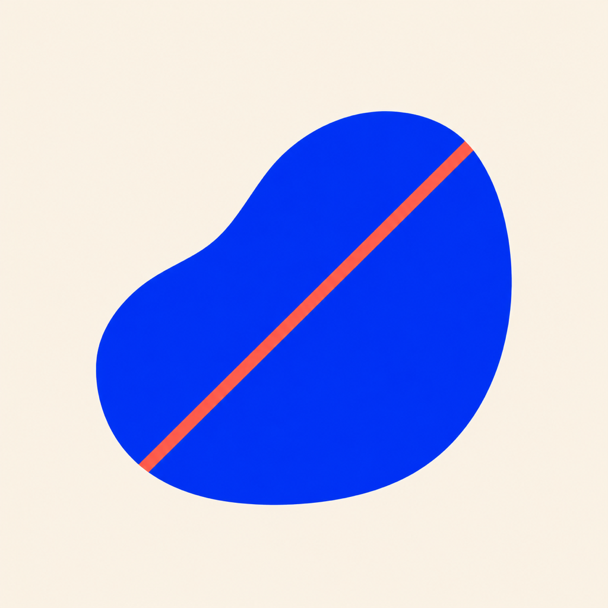

Support
Good Eye
Choose a line to split an original shape, then see how close the two areas are to equal. Adjust its position and angle before the cut. Practice offers a short direction cue; Daily Five gives five UTC-based rounds and preserves first-attempt scores. Seeded practice and progress save on this device.
Get help
Email hi@mosselora.com with your device model and what happened. We read every message.
Your progress
Progress is saved on your device only. Deleting the app removes it; there is no cloud backup.